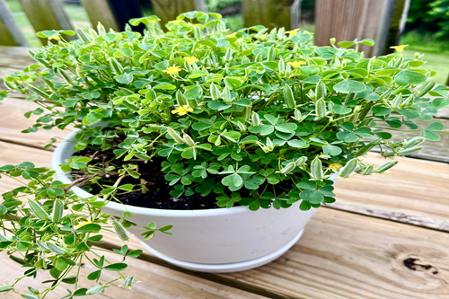

Fake Clovers

Believe it or not, a large amount of people think that certain plants are clovers when they actually are not.
Commonly Confused
As pictured to the right, there are certain plants that are commonly confused as clovers. These include the common wood sorrel, the black medic, and the water clover. Although they all look like clovers, and might even have clover in the name, they are biologically not clover.